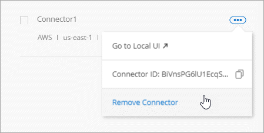
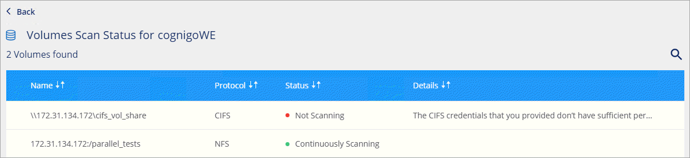
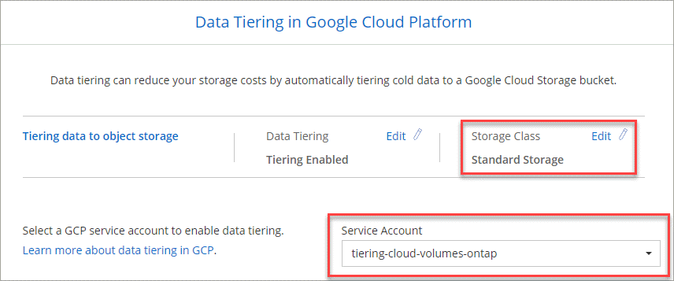

Demander de modifier un document
Demander de modifier un document Modifier sur GitHub
Modifier sur GitHub Guide des contributeurs
Guide des contributeursConsultez les documents sur la dernière version.
Nouveautés de Cloud Manager 3.8
Contributeurs
Cloud Manager propose généralement une nouvelle version tous les mois afin de vous apporter de nouvelles fonctionnalités, améliorations et correctifs.

|
Vous recherchez une version précédente ?"Nouveautés de la version 3.7" "Nouveautés de la version 3.6" "Nouveautés de la version 3.5" |
Nouveau fournisseur Terraform (19 octobre 2020)
Nous avons développé un nouveau fournisseur Terraform que les équipes DevOps peuvent utiliser avec Cloud Manager pour automatiser et intégrer Cloud Volumes ONTAP avec l’infrastructure-as-code.
Mise à jour de Cloud Manager 3.8.9 (18 octobre 2020)
Valorisation "Spot’s Cloud Analyzer", Cloud Manager peut désormais fournir une analyse des coûts généraux de vos dépenses de calcul dans le cloud et identifier les économies potentielles. Ces informations sont disponibles dans le service Compute de Cloud Manager. "En savoir plus >>".

Mise à jour de Cloud Manager 3.8.9 (13 octobre 2020)
Nous avons publié deux mises à jour de Cloud Tiering :
-
Les licences pour Cloud Tiering sont désormais disponibles depuis Cloud Manager.
Payez pour le Tiering des données d’un cluster ONTAP sur site vers le cloud, via un abonnement avec paiement à l’utilisation, une licence de hiérarchisation ONTAP appelée FabricPool, ou une combinaison des deux.
-
Le service autonome Cloud Tiering a été supprimé. Vous devez désormais accéder à Cloud Tiering directement depuis Cloud Manager, où toutes les mêmes fonctionnalités sont disponibles.
Cloud Manager 3.8.9 (4 octobre 2020)
Améliorations de Cloud Compliance
-
Un nouveau rôle Cloud Compliance Viewer est disponible dans Cloud Manager.
Les utilisateurs affectés à ce rôle peuvent uniquement afficher les informations de conformité et générer des rapports pour les espaces de travail auxquels ils sont autorisés à accéder. Elles ne peuvent pas gérer les paramètres de conformité cloud et n’ont pas accès aux autres fonctionnalités et services Cloud Manager. Cela peut jouer un rôle crucial pour votre équipe juridique afin qu’elle puisse surveiller les résultats de l’analyse de la conformité dans le cloud. Voir "rôles utilisateur" pour plus d’informations.
-
Ajout de la prise en charge pour la numérisation des schémas de base de données MongoDB et PostgreSQL. Voir "analyse des schémas de base de données" pour en savoir plus.
-
Les tarifs de conformité cloud changent depuis le 7 octobre.
Les 1 premiers To de données analysés par Cloud Compliance dans un espace de travail Cloud Manager sont gratuits. Cela inclut les données des volumes Cloud Volumes ONTAP, des volumes Azure NetApp Files, des compartiments Amazon S3 et des schémas de base de données. Un abonnement est nécessaire pour numériser toutes les données supplémentaires après avoir atteint 1 To. Voir "tarifs" pour plus d’informations.
Améliorations de Cloud Volumes Service pour AWS
Lorsque vous créez un volume, vous pouvez choisir de le baser sur une copie Snapshot existante d’un autre volume.
Intégration avec Cloud Sync
Le service Cloud Sync de NetApp est à présent disponible dans Cloud Manager. Cloud Sync offre un moyen simple, sécurisé et automatisé de migrer vos données de n’importe quelle destination source vers n’importe quelle destination cible, dans le cloud ou sur votre site. "En savoir plus >>".
Améliorations de la gestion de compte
Nous avons ajouté d’autres moyens de gérer votre compte.
-
Une présentation des ressources de votre compte est désormais disponible.
Vous pouvez afficher rapidement le nombre d’utilisateurs, d’espaces de travail, de connecteurs et d’abonnements dans votre compte.
-
Vous pouvez modifier le nom de votre compte.
-
Vous pouvez copier votre ID de compte, votre ID d’espace de travail ou votre ID de connecteur.
La copie de ces identifiants vous aidera à utiliser les fonctions d’automatisation que nous prévoyons.
-
Vous pouvez désactiver l’utilisation de la plateforme SaaS.
Nous ne recommandons pas de désactiver la plate-forme SaaS, sauf si vous devez vous conformer aux politiques de sécurité de votre entreprise. En désactivant la plateforme SaaS, vous vous limitent votre capacité à utiliser les services cloud intégrés de NetApp. "En savoir plus >>".

Changements pour les régions gouvernementales
Si vous déployez un connecteur dans une région AWS GovCloud, une région Azure Government ou une région Azure DoD, l’accès à Cloud Manager est désormais disponible uniquement via l’adresse IP d’hôte d’un connecteur. L’accès à la plateforme SaaS est désactivé pour l’ensemble du compte.
Cela signifie que seuls les utilisateurs privilégiés qui peuvent accéder au VPC/vNet interne de l’utilisateur final peuvent utiliser l’interface ou l’API de Cloud Manager.
Mise à jour de Cloud Manager 3.8.8 (22 septembre 2020)
Nous avons amélioré le service Kubernetes pour faciliter l’utilisation et fournir des fonctionnalités supplémentaires :
-
Nous avons facilité la découverte des clusters Kubernetes exécutés dans le service Kubernetes géré de votre fournisseur cloud.
Il vous suffit de cliquer sur découvrir les clusters et Cloud Manager détecte vos clusters gérés en utilisant les autorisations du fournisseur de cloud que vous avez déjà fournies.
-
Vous pouvez désormais afficher plus d’informations sur un cluster Kubernetes découvert, notamment son état, le nombre de volumes, les classes de stockage, etc.

-
Nous avons ajouté une vérification des ressources et des erreurs pour vérifier que la communication est disponible entre le cluster et Cloud Volumes ONTAP. Si ce n’est pas le cas, nous vous le ferons savoir.
Notez que le compte de service pour un connecteur nécessite les autorisations suivantes pour découvrir et gérer les clusters Kubernetes exécutés dans Google Kubernetes Engine (GKE) :
- container.*Mise à jour de Cloud Manager 3.8.8 (10 septembre 2020)
Les améliorations suivantes sont disponibles lors du déploiement de Global File cache via Cloud Manager :
-
Une paire haute disponibilité Cloud Volumes ONTAP dans AWS est désormais prise en charge en tant que plateforme de stockage back-end pour votre système de stockage central.
-
Plusieurs instances centrales de cache de fichiers globaux peuvent être déployées dans une conception Load Distributed.
Cloud Manager 3.8.8 (9 septembre 2020)
Prise en charge de Cloud Volumes Service pour Google Cloud
-
Ajoutez un environnement de travail pour gérer les Cloud Volumes Service existants pour les volumes GCP et créer de nouveaux volumes. "Découvrez comment".
-
Créez et gérez des volumes NFS v3 et NFS v4.1 pour les clients Linux et UNIX, et les volumes SMB 3.x pour les clients Windows.
-
Créez, supprimez et restaurez des snapshots de volume.
La sauvegarde dans le cloud prend désormais en charge les clusters ONTAP sur site
Commencez à sauvegarder les données stockées dans vos systèmes ONTAP sur site vers le cloud. Intégrez une sauvegarde dans le cloud à vos environnements de travail sur site pour sauvegarder des volumes dans le stockage Azure Blob. "En savoir plus >>".
Améliorations de la sauvegarde dans le cloud
Nous avons révisé l’interface utilisateur pour une meilleure utilisation :
-
Page de liste des volumes pour voir facilement les volumes sauvegardés avec les sauvegardes disponibles
-
Page des paramètres de sauvegarde pour afficher les paramètres de sauvegarde de chaque environnement de travail
Améliorations de Cloud Compliance
-
Capacité à analyser les données à partir des bases de données
Scannez vos bases de données pour identifier les données personnelles et sensibles qui résident dans chaque schéma. Les bases de données prises en charge incluent Oracle, SAP HANA et SQL Server (MSSQL). "En savoir plus sur la numérisation de bases de données".
-
Capacité à analyser des volumes de protection des données (DP)
Les volumes DP sont des volumes de destination à partir des opérations SnapMirror en général depuis des clusters ONTAP sur site. Vous pouvez désormais identifier facilement les données personnelles et sensibles qui résident dans les fichiers sur site. "Découvrez comment".
Navigation mise à jour
Nous avons actualisé l’en-tête dans Cloud Manager pour faciliter la navigation entre les services clouds NetApp.
Cliquez sur Afficher tous les services et vous pouvez épingler et déépingler les services que vous souhaitez voir dans la navigation.

Comme vous pouvez le voir, nous avons également actualisé les menus déroulants compte, espace de travail et connecteur, ce qui facilite l’affichage de vos sélections actuelles.
Améliorations de l’administration
-
Vous pouvez maintenant supprimer les connecteurs inactifs de Cloud Manager. "Découvrez comment".

-
Vous pouvez désormais remplacer l’abonnement Marketplace actuellement associé aux identifiants de votre fournisseur cloud. Si vous avez besoin de modifier votre facturation, cette modification peut vous aider à vous assurer que vous êtes facturé via l’abonnement Marketplace approprié.
Découvrez comment "Dans AWS", "Dans Azure", et "Dans GCP".
Mise à jour sur les autorisations Azure requises (6 août 2020)
Pour éviter les échecs de déploiement d’Azure, vérifiez que votre stratégie Cloud Manager dans Azure inclut l’autorisation suivante :
"Microsoft.Resources/deployments/operationStatuses/read"Azure requiert désormais cette autorisation pour certains déploiements de machines virtuelles (elle dépend du matériel physique sous-jacent utilisé lors du déploiement).
Cloud Manager 3.8.7 (3 août 2020)
Nouvelle expérience en tant que service
Nous avons totalement introduit une expérience SaaS pour Cloud Manager. Cette nouvelle expérience facilite l’utilisation de Cloud Manager et nous permet de proposer des fonctionnalités supplémentaires pour gérer votre infrastructure de cloud hybride.
Cloud Manager inclut un "Interface SaaS" Cet outil est intégré à NetApp Cloud Central et aux connecteurs qui permettent à Cloud Manager de gérer les ressources et les processus au sein de votre environnement de cloud public. (Le connecteur est en fait le même que le logiciel Cloud Manager que vous avez installé.)

|
Un connecteur est nécessaire dans la plupart des cas, mais il n’est pas nécessaire d’utiliser Azure NetApp Files, Cloud Volumes Service ou Cloud Sync depuis Cloud Manager. |
Comme nous l’avons déjà mentionné dans ces notes de version, vous devrez mettre à niveau le type de machine de vos connecteurs pour accéder aux nouvelles fonctionnalités que nous proposons. Cloud Manager vous invite à modifier le type de machine. "En savoir plus >>".
Améliorations de Cloud Volumes ONTAP
Deux améliorations sont disponibles pour Cloud Volumes ONTAP.
-
Plusieurs licences BYOL pour allouer de la capacité supplémentaire
Vous pouvez désormais acheter plusieurs licences pour un système Cloud Volumes ONTAP BYOL afin d’allouer plus de 368 To de capacité. Par exemple, vous pouvez acheter deux licences pour allouer une capacité allant jusqu’à 736 To à Cloud Volumes ONTAP. Vous pouvez également acheter quatre licences pour obtenir jusqu’à 1.4 po.
Le nombre de licences que vous pouvez acheter pour un système à un seul nœud ou une paire HA est illimité.
Notez que les limites de disques peuvent vous empêcher d’atteindre la limite de capacité en utilisant des disques seuls. Vous pouvez aller au-delà de la limite des disques de "tiering des données inactives vers le stockage objet". Pour plus d’informations sur les limites de disques, reportez-vous à la section "Limites de stockage dans les notes de mise à jour de Cloud Volumes ONTAP".
-
Crypter les disques gérés Azure à l’aide de clés externes
Vous pouvez désormais chiffrer les disques gérés Azure sur des systèmes Cloud Volumes ONTAP à un seul nœud à l’aide de clés externes provenant d’un autre compte. Cette fonctionnalité est prise en charge à l’aide d’API.
Lors de la création du système à un nœud, il vous suffit d’ajouter ce qui suit à la demande d’API :
"azureEncryptionParameters": { "key": <azure id of encryptionset> }Cette fonctionnalité requiert de nouvelles autorisations, comme indiqué dans la dernière "Cloud Manager policy pour Azure".
"Microsoft.Compute/diskEncryptionSets/read"
Améliorations de Azure NetApp Files
Cette version inclut un certain nombre d’améliorations en matière de prise en charge d’Azure NetApp Files.
-
Configuration Azure NetApp Files
Vous pouvez désormais configurer et gérer Azure NetApp Files directement à partir de Cloud Manager. "Découvrez comment".
-
Prise en charge du nouveau protocole
Il est désormais possible de créer des volumes NFSv4.1 et SMB.
-
Gestion des instantanés de pool de capacité et de volume
Cloud Manager vous permet de créer, de supprimer et de restaurer des snapshots de volumes. Vous avez également la possibilité de créer de nouveaux pools de capacité et de spécifier leurs niveaux de service.
-
Possibilité de modifier des volumes
Vous pouvez modifier un volume en modifiant sa taille et en gérant les balises.
Améliorations de Cloud Volumes Service pour AWS
La prise en charge d’Cloud Volumes Service pour AWS intègre de nombreuses améliorations dans Cloud Manager.
-
Prise en charge du nouveau protocole
Il est désormais possible de créer des volumes NFSv4.1, des volumes SMB et des volumes à double protocole. Auparavant, vous pouviez uniquement créer et détecter les volumes NFSv3 dans Cloud Manager.
-
Prise en charge de l’instantané
Vous pouvez créer des règles Snapshot pour automatiser la création de snapshots de volumes, créer un snapshot à la demande, restaurer un volume à partir d’un snapshot, créer un volume basé sur un snapshot existant, et bien plus encore. Voir "Gestion des copies Snapshot de Cloud volumes" pour en savoir plus.
-
Créez le volume initial dans une région à partir de Cloud Manager
Avant cette version, le premier volume de chaque région a dû être créé dans l’interface Cloud Volumes Service pour AWS. Vous pouvez maintenant vous abonner à "L’un des services NetApp Cloud Volumes Service sur AWS Marketplace" Puis créez le premier volume depuis Cloud Manager.
Améliorations de Cloud Compliance
Cloud Compliance est désormais disponible avec les améliorations suivantes.
-
Processus de déploiement révisé pour votre instance Cloud Compliance
L’instance Cloud Compliance est configurée et déployée à l’aide d’un nouvel assistant dans Cloud Manager. Une fois le déploiement terminé, activez le service pour chaque environnement de travail que vous souhaitez analyser.
-
Possibilité de sélectionner les volumes à analyser dans un environnement de travail
Vous pouvez désormais activer et désactiver la numérisation de volumes individuels dans un environnement de travail Cloud Volumes ONTAP ou Azure NetApp Files. Si vous n’avez pas besoin de scanner certains volumes pour des raisons de conformité, désactivez-les.
-
Onglets de navigation pour atteindre rapidement votre zone d’intérêt
Les nouveaux onglets Tableau de bord, Investigation et Configuration vous permettent d’accéder plus facilement à ces sections.
-
Rapport HIPAA
Un nouveau rapport sur la loi HIPAA (Health Insurance Portability and Accountability Act) est désormais disponible. Ce rapport est conçu pour aider votre organisation à respecter les lois HIPAA sur la protection des données personnelles.
-
Nouveau type de données personnelles sensibles
Cloud Compliance peut désormais trouver des codes médicaux CIM-9-cm dans des fichiers.
-
Nouveau type de données personnelles
Cloud Compliance peut désormais trouver deux nouveaux identifiants nationaux dans les fichiers : l’ID croate (OIB) et l’ID grec.
Améliorations de la sauvegarde dans le cloud
Les améliorations suivantes sont désormais disponibles pour Backup vers le cloud :
-
Apportez votre propre licence (BYOL) est maintenant disponible
La sauvegarde dans le cloud n’est disponible qu’avec une licence PAYGO (Pay As You Go). Une licence BYOL permet d’acheter une licence auprès de NetApp pour utiliser Backup to Cloud pendant une certaine période et pour un espace de sauvegarde maximal. Lorsque l’une ou l’autre limite est atteinte, vous devez renouveler la licence.
-
Prise en charge des volumes de protection des données (DP)
Les volumes de protection des données peuvent être sauvegardés et restaurés dès maintenant.
Prise en charge de Global File cache
NetApp Global File cache vous permet de consolider les silos de serveurs de fichiers distribués en un seul environnement de stockage global cohérent dans le cloud public. Un système de fichiers accessible partout dans le cloud est ainsi créé, que tous les emplacements distribués peuvent utiliser comme s’ils étaient locaux.
À partir de cette version, l’instance Global File cache Management et l’instance Core peuvent être déployées et gérées via Cloud Manager. Le processus de déploiement initial permet de gagner plusieurs heures et de bénéficier d’une fenêtre unique via Cloud Manager pour tous les systèmes déployés. Les instances globales de cache de fichiers Edge sont toujours déployées localement dans les bureaux distants.
Voir "Présentation du cache de fichiers global" pour en savoir plus.
La configuration initiale pouvant être déployée à l’aide de Cloud Manager doit répondre aux exigences suivantes. D’autres configurations, comme Cloud Volumes Service, Azure NetApp Files, Cloud Volumes Service pour AWS et GCP, continuent d’être déployées en suivant les procédures existantes. "En savoir plus >>".
-
La plateforme de stockage interne utilisée comme stockage central doit être un environnement de travail dans lequel vous avez déployé une paire Cloud Volumes ONTAP HA dans Azure.
Les autres plateformes de stockage et autres fournisseurs cloud ne sont pas pris en charge à l’heure actuelle via Cloud Manager, mais peuvent être déployés via des procédures de déploiement héritées.
-
Le réseau Fibre Channel Core peut être déployé uniquement en tant qu’instance autonome.
Si vous devez utiliser une conception Load Distributed qui inclut plusieurs instances Core, vous devez utiliser les procédures héritées.
Cette fonctionnalité requiert de nouvelles autorisations, comme indiqué dans la dernière "Cloud Manager policy pour Azure".
"Microsoft.Resources/deployments/operationStatuses/read",
"Microsoft.Insights/Metrics/Read",
"Microsoft.Compute/virtualMachines/extensions/write",
"Microsoft.Compute/virtualMachines/extensions/read",
"Microsoft.Compute/virtualMachines/extensions/delete",
"Microsoft.Compute/virtualMachines/delete",
"Microsoft.Network/networkInterfaces/delete",
"Microsoft.Network/networkSecurityGroups/delete",
"Microsoft.Resources/deployments/delete",L’expérience améliorée exige un type de machine plus robuste (15 juillet 2020)
Pour améliorer l’expérience de Cloud Manager, vous devez mettre à niveau votre type de machine afin d’accéder aux nouvelles fonctionnalités que nous vous proposons. Les améliorations comprendront un "Expérience en tant que service dans Cloud Manager" enfin, des intégrations améliorées et nouvelles des services cloud.
Cloud Manager vous invite à modifier le type de machine.
Voici quelques détails :
-
Afin de garantir que les ressources appropriées sont disponibles pour fonctionner correctement les nouvelles fonctionnalités de Cloud Manager, nous avons modifié l’instance par défaut, la machine virtuelle et le type de machine comme suit :
-
AWS : instance de t3.XLarge
-
Azure: DS3 v2
-
GCP : N1-standard-4
Ces tailles par défaut sont le minimum pris en charge "En fonction des besoins en processeur et en RAM".
-
-
Dans le cadre de cette transition, Cloud Manager nécessite l’accès au terminal suivant pour obtenir des images logicielles des composants de conteneur pour une infrastructure Docker :
https://cloudmanagerinfraprod.azurecr.io
Assurez-vous que votre pare-feu autorise l’accès à ce terminal à partir de Cloud Manager.
Cloud Manager 3.8.6 (6 juillet 2020)
Prise en charge des volumes iSCSI
Cloud Manager vous permet désormais de créer des volumes iSCSI pour les clusters Cloud Volumes ONTAP et ONTAP sur site directement à partir de l’interface utilisateur.
Lorsque vous créez un volume iSCSI, Cloud Manager crée automatiquement une LUN pour vous. Nous avons simplifié la gestion en créant un seul LUN par volume, donc aucune gestion n’est nécessaire. Une fois le volume créé, "Utilisez l’IQN pour vous connecter à la LUN à partir de vos hôtes".
|
|
Vous pouvez créer des LUN supplémentaires depuis System Manager ou l’interface de ligne de commandes. |
Prise en charge de l’ensemble des règles de Tiering
Vous pouvez désormais choisir la règle toutes les règles de Tiering lors de la création ou de la modification d’un volume pour Cloud Volumes ONTAP. Lorsque vous utilisez la règle de Tiering, les données sont immédiatement marquées comme inactives et hiérarchisées vers le stockage objet dès que possible. "En savoir plus sur le Tiering des données".
Cloud Manager transition vers SaaS (22 juin 2020)
Découvrez Cloud Manager comme une expérience en tant que service. Cette nouvelle expérience facilite l’utilisation de Cloud Manager et nous permet de proposer des fonctionnalités supplémentaires pour gérer votre infrastructure de cloud hybride. "En savoir plus >>".
Cloud Manager 3.8.5 (31 mai 2020)
Nouvel abonnement requis dans Azure Marketplace
Un nouvel abonnement est disponible sur Azure Marketplace. Cet abonnement unique est nécessaire pour déployer Cloud Volumes ONTAP 9.7 PAYGO (sauf pour votre système d’essai gratuit de 30 jours). Par ailleurs, cet abonnement nous permet de proposer des fonctionnalités d’extension pour Cloud Volumes ONTAP PAYGO et BYOL. Vous serez facturé à partir de cet abonnement pour chaque système Cloud Volumes ONTAP PAYGO que vous créez et chaque fonction complémentaire que vous activez.
Lorsque vous déployez un nouveau système Cloud Volumes ONTAP (9.7 P1 ou ultérieure), Cloud Manager vous invite à vous abonner à cette offre.

Améliorations de la sauvegarde dans le cloud
Les améliorations suivantes sont désormais disponibles pour Backup vers le cloud :
-
Dans Azure, vous pouvez désormais créer un nouveau groupe de ressources ou sélectionner un groupe de ressources existant au lieu d’en créer un pour vous. Impossible de modifier le groupe de ressources après l’activation de la sauvegarde dans le cloud.
-
Dans AWS, vous pouvez maintenant sauvegarder des instances Cloud Volumes ONTAP résidant sur un compte AWS différent de celui de votre compte Cloud Manager AWS.
-
D’autres options sont désormais disponibles lors de la sélection de la planification de sauvegarde pour les volumes. Outre les options de sauvegarde quotidiennes, hebdomadaires et mensuelles, vous pouvez désormais sélectionner l’une des règles définies par le système et qui prévoient des règles combinées, telles 30 que les sauvegardes quotidiennes, hebdomadaires 13 et 12 mensuelles.
-
Après avoir supprimé toutes les sauvegardes d’un volume, vous pouvez à nouveau commencer à créer des sauvegardes pour ce volume. Il s’agissait d’une limitation connue dans la version précédente.
Améliorations de Cloud Compliance
Vous pouvez bénéficier des améliorations suivantes pour Cloud Compliance.
-
Vous pouvez désormais analyser des compartiments S3 qui se trouvent dans différents comptes AWS que l’instance Cloud Compliance. Il vous suffit de créer un rôle sur ce nouveau compte pour que l’instance Cloud Compliance existante puisse se connecter à ces compartiments. "En savoir plus >>".
Si vous avez configuré Cloud Compliance avant la version 3.8.5, vous devez modifier l’existant "Rôle IAM pour l’instance Cloud Compliance" pour utiliser cette fonctionnalité.
-
Vous pouvez désormais filtrer le contenu de la page d’enquête pour n’afficher que les résultats que vous souhaitez voir. Les filtres comprennent l’environnement de travail, la catégorie, les données privées, le type de fichier, la date de la dernière modification, Et si les autorisations de l’objet S3 sont ouvertes à un accès public.

-
Vous pouvez désormais activer et désactiver Cloud Compliance dans un environnement de travail directement à partir de l’onglet Cloud Compliance.
Mise à jour de Cloud Manager 3.8.4 (10 mai 2020)
Nous avons publié une amélioration pour Cloud Manager 3.8.4.
Intégration avec Cloud Insights
Grâce au service NetApp Cloud Insights, Cloud Manager vous donne des informations sur l’état et les performances de vos instances Cloud Volumes ONTAP et vous aide à résoudre et à optimiser les problèmes liés aux performances de votre environnement de stockage cloud. "En savoir plus >>".
Cloud Manager 3.8.4 (3 mai 2020)
Cloud Manager 3.8.4 comprend notamment :
Améliorations de la sauvegarde dans le cloud
Les améliorations suivantes sont désormais disponibles pour la sauvegarde dans le cloud (anciennement Backup to S3 pour AWS) :
-
Sauvegarde vers stockage Azure Blob
Cloud Volumes ONTAP est désormais disponible dans Azure pour la sauvegarde dans le cloud. La solution de sauvegarde dans le cloud offre des fonctionnalités de sauvegarde et de restauration pour la protection et l’archivage à long terme de vos données cloud. "En savoir plus >>".
-
Suppression de sauvegardes
Vous pouvez désormais supprimer toutes les sauvegardes d’un volume spécifique directement depuis l’interface Cloud Manager. "En savoir plus >>".
Cloud Manager 3.8.3 (5 avril 2020)
Intégration avec NetApp Cloud Tiering
Le service NetApp Cloud Tiering est désormais disponible dans Cloud Manager. NetApp Cloud Tiering permet de transférer les données depuis un cluster ONTAP sur site vers un stockage objet à moindre coût dans le cloud. Cela libère de l’espace de stockage hautes performances sur le cluster pour davantage de charges de travail.
Migration des données vers Azure NetApp Files
Vous pouvez désormais migrer des données NFS ou SMB vers Azure NetApp Files directement depuis Cloud Manager. La synchronisation des données est optimisée par le service Cloud Sync de NetApp.
Améliorations de Cloud Compliance
Cloud Compliance est désormais disponible avec les améliorations suivantes.
-
Essai gratuit de 30 jours pour Amazon S3
Une version d’essai gratuite de 30 jours est désormais disponible pour analyser les données Amazon S3 avec Cloud Compliance. Si vous avez précédemment activé Cloud Compliance sur Amazon S3, votre version d’évaluation gratuite de 30 jours est active à partir d’aujourd’hui (5 avril 2020).
Un abonnement à AWS Marketplace est nécessaire pour continuer à analyser Amazon S3 à la fin de la période d’essai gratuite. "Découvrez comment vous inscrire".
-
Nouveau type de données personnelles
Cloud Compliance trouve désormais un nouvel identifiant national dans les fichiers : l’identifiant brésilien (CPF).
-
Prise en charge des catégories de métadonnées supplémentaires
Cloud Compliance peut désormais catégoriser vos données en neuf catégories de métadonnées supplémentaires. "Consultez la liste complète des catégories de métadonnées prises en charge".
Sauvegardez vers les améliorations S3
Les améliorations suivantes sont désormais disponibles pour le service Backup vers S3.
-
Politique de cycle de vie S3 pour les sauvegardes
Les sauvegardes commencent dans la classe de stockage Standard et passent à la classe de stockage Standard-Infrequent Access après 30 jours.
-
Suppression de sauvegardes
Vous pouvez désormais supprimer des sauvegardes à l’aide d’une API Cloud Manager. "En savoir plus >>".
-
Bloquer l’accès public
Cloud Manager permet à présent de "Fonctionnalité d’accès public aux blocs Amazon S3" Dans le compartiment S3, les sauvegardes sont stockées.
Volumes iSCSI avec API
Les API Cloud Manager vous permettent désormais de créer des volumes iSCSI. "Voir un exemple ici".
Cloud Manager 3.8.2 (1er mars 2020)
Les environnements de travail Amazon S3
Cloud Manager détecte désormais automatiquement les informations relatives aux compartiments Amazon S3 qui résident dans le compte AWS sur lequel il est installé. Vous pouvez ainsi consulter facilement des informations détaillées sur vos compartiments S3, notamment la région, le niveau d’accès, la classe de stockage et voir si le compartiment est utilisé avec Cloud Volumes ONTAP pour les sauvegardes ou le Tiering des données. Vous pouvez également analyser les compartiments S3 avec Cloud Compliance, comme décrit ci-dessous.

Améliorations de Cloud Compliance
Cloud Compliance est désormais disponible avec les améliorations suivantes.
-
Prise en charge d’Amazon S3
Cloud Compliance peut à présent analyser vos compartiments Amazon S3 pour identifier les données personnelles et sensibles qui résident dans le stockage objet S3. Cloud Compliance peut analyser n’importe quel compartiment du compte, quel que soit son origine pour une solution NetApp.
-
Page d’enquête
Une nouvelle page Investigation est maintenant disponible pour chaque type de fichier personnel, fichier personnel sensible, catégorie et type de fichier. La page affiche des détails sur les fichiers affectés et vous permet de trier par les fichiers qui incluent les données les plus personnelles, les données personnelles sensibles et les noms des sujets de données. Cette page remplace le rapport CSV précédemment disponible.
Voici un exemple :

-
Rapport DSS PCI
Un nouveau rapport PCI DSS (Payment Card Industry Data Security Standard) est maintenant disponible. Ce rapport peut vous aider à identifier la distribution des informations de carte de crédit dans vos dossiers. Vous pouvez visualiser le nombre de fichiers contenant des informations de carte de crédit, que les environnements de travail soient protégés par le chiffrement, la protection contre les ransomwares, les informations de conservation, et bien plus encore.
-
Nouveau type de données personnelles sensibles
Cloud Compliance peut désormais trouver des codes médicaux ICD-10-cm, utilisés dans le secteur médical et de la santé.
Version NFS pour les volumes
Vous pouvez maintenant sélectionner la version NFS à activer sur un volume lorsque vous créez ou modifiez un volume pour Cloud Volumes ONTAP.

Prise en charge des régions Azure Government
Les paires HA Cloud Volumes ONTAP sont désormais prises en charge dans les régions Azure Government.
Mise à jour de Cloud Manager 3.8.1 (16 février 2020)
Nous avons publié quelques améliorations dans Cloud Manager 3.8.1.
Sauvegardez vers les améliorations S3
-
Les copies de sauvegarde sont désormais stockées dans un compartiment S3 créé par Cloud Manager dans votre compte AWS, avec un compartiment par environnement de travail Cloud Volumes ONTAP.
-
La sauvegarde vers S3 est désormais prise en charge dans toutes les régions AWS "Dans ce cas, Cloud Volumes ONTAP est pris en charge".
-
Vous pouvez définir le planning de sauvegarde sur quotidien, hebdomadaire ou mensuel.
-
Cloud Manager n’a plus besoin de configurer des liens privés vers le service Backup vers S3.
Ces améliorations nécessitent des autorisations S3 supplémentaires. Le rôle IAM qui fournit des autorisations à Cloud Manager doit inclure des autorisations provenant des dernières "Politique de Cloud Manager".
Mises à jour AWS
Nous avons introduit la prise en charge de nouvelles instances EC2 et une modification du nombre de disques de données pris en charge pour Cloud Volumes ONTAP 9.6 et 9.7. Consultez les modifications dans les notes de mise à jour de Cloud Volumes ONTAP.
Cloud Manager 3.8.1 (2 février 2020)
Améliorations de Cloud Compliance
Cloud Compliance est désormais disponible avec les améliorations suivantes.
-
* Prise en charge de Azure NetApp Files*
Nous avons le plaisir de vous annoncer que Cloud Compliance peut désormais analyser Azure NetApp Files pour identifier les données personnelles et sensibles qui résident sur les volumes.
-
Etat de numérisation
Cloud Compliance affiche désormais l’état de scan pour chaque volume CIFS et NFS, y compris les messages d’erreur que vous pouvez utiliser pour corriger les problèmes.

-
Filtrer le tableau de bord par environnement de travail
Vous pouvez désormais filtrer le contenu du tableau de bord Cloud Compliance afin de voir les données de conformité pour des environnements de travail spécifiques.

-
Nouveau type de données personnelles
Cloud Compliance peut désormais identifier un permis de conduire en Californie lors de l’analyse de données.
-
Prise en charge des catégories supplémentaires
Trois catégories supplémentaires sont prises en charge : les données d’application, les journaux et les fichiers de base de données et d’index.
Améliorations apportées aux comptes et aux abonnements
Nous avons simplifié la sélection d’un compte AWS ou d’un projet GCP, ainsi que l’abonnement Marketplace pour un système Cloud Volumes ONTAP avec paiement basé sur l’utilisation. Ces améliorations vous permettent de vous assurer que vous payez à partir du compte ou du projet approprié.
Par exemple, lorsque vous créez un système dans AWS, cliquez sur Modifier les informations d’identification si vous ne souhaitez pas utiliser le compte et l’abonnement par défaut :

Ensuite, vous pouvez choisir les identifiants du compte à utiliser et l’abonnement AWS Marketplace associé. Vous pouvez même ajouter un abonnement Marketplace, si vous le souhaitez.

Si vous gérez plusieurs abonnements AWS, vous pouvez les attribuer à différentes informations d’identification AWS à partir de la page informations d’identification des paramètres :

Améliorations apportées au calendrier
La chronologie a été améliorée afin de vous fournir des informations complémentaires sur les services cloud NetApp que vous utilisez.
-
La chronologie montre maintenant les actions de tous les systèmes Cloud Manager au sein du même compte Cloud Central
-
Vous pouvez désormais trouver plus facilement des informations en filtrant, en recherchant et en ajoutant et en supprimant des colonnes
-
Vous pouvez à présent télécharger les données de la chronologie au format CSV
-
À l’avenir, le calendrier montrera des actions pour chaque service cloud NetApp que vous utilisez (mais vous pouvez filtrer les informations en un seul service)

Cloud Manager 3.8 (8 janvier 2020)
Amélioration DE LA HAUTE DISPONIBILITÉ dans Azure
Les améliorations suivantes sont désormais disponibles pour les paires HA Cloud Volumes ONTAP dans Azure.
-
Remplacer les verrous CIFS pour Cloud Volumes ONTAP HA dans Azure
Vous pouvez désormais activer un paramètre dans Cloud Manager qui empêche les problèmes liés au basculement du stockage Cloud Volumes ONTAP lors des événements de maintenance Azure. Lorsque vous activez ce paramètre, Cloud Volumes ONTAP vetoes les verrous CIFS et réinitialise les sessions CIFS actives. "En savoir plus >>".
-
Connexion HTTPS de Cloud Volumes ONTAP aux comptes de stockage
Vous pouvez désormais activer une connexion HTTPS à partir d’une paire HA Cloud Volumes ONTAP 9.7 vers des comptes de stockage Azure lors de la création d’un environnement de travail. Notez que l’activation de cette option peut avoir un impact sur les performances d’écriture. Vous ne pouvez pas modifier le paramètre après avoir créé l’environnement de travail.
-
Prise en charge des comptes de stockage v2 à usage général Azure
Les comptes de stockage créés par Cloud Manager pour les paires haute disponibilité Cloud Volumes ONTAP 9.7 sont désormais des comptes de stockage v2 à usage général.
Améliorations du Tiering des données dans GCP
Les améliorations suivantes sont disponibles pour le Tiering des données Cloud Volumes ONTAP dans GCP.
-
Classes de stockage Google Cloud pour le Tiering des données
Vous pouvez désormais choisir une classe de stockage pour les données Tiering Cloud Volumes ONTAP vers Google Cloud Storage :
-
Stockage standard (par défaut)
-
Stockage « nearline »
-
Stockage de la ligne de refroidissement
-
-
Hiérarchisation des données à l’aide d’un compte de service
Depuis la version 9.7, Cloud Manager attribue désormais un compte de service sur l’instance Cloud Volumes ONTAP. Ce compte de service fournit des autorisations de Tiering des données vers un compartiment Google Cloud Storage. Ce changement assure plus de sécurité et nécessite moins d’installation. Pour obtenir des instructions détaillées lors du déploiement d’un nouveau système, "reportez-vous à l’étape 4 de cette page".
L’image suivante montre l’assistant Environnement de travail où vous pouvez sélectionner une classe de stockage et un compte de service :

Cloud Manager requiert les autorisations GCP suivantes pour ces améliorations, comme illustré en dernier "Règle Cloud Manager pour GCP".
- storage.buckets.update
- compute.instances.setServiceAccount
- iam.serviceAccounts.getIamPolicy
- iam.serviceAccounts.list